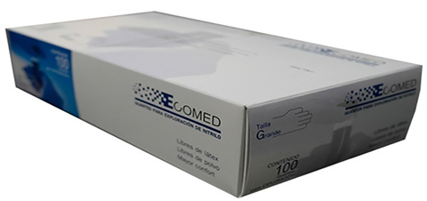

GuanteS de nitrilo 4.1
Modelo GTE-ECO-0003

DESCRIPCIÓN:
Guante de nitrilo para exploración XS a XG.
Guante de examinación de nitrilo fabricado 100% (acninonitrilo-butadieno), brindando mayor seguridad y sensibilidad para todo el personal médico siendo una buena opción para las personas alérgicas al látex.
DATOS TÉCNICOS:
Mayor seguridad al usuario y al paciente. Mayor resistencia a la permeabilidad química.
Mayor confort, libre de látex y libre de polvo, sin problemas de alergia (hipoalergénico).
Una formulación y espesor optimizados hacen a los guantes de examinación Ecomed de nitrilo más cómodos y suaves. Sin olor desagradable. Tres veces más resistente que el látex.
Fuerza superior con mejor resistencia a la penetración química que los guantes de látex natural del mismo grosor. Puños con bordes que aseguran la colocación fácil y ayuda a prevenir que se deslicen.
TAMAÑOS:
Guante de exploración de nitrilo de 4.1 XS.
Guante de exploración de nitrilo de 4.1 S.
Guante de exploración de nitrilo de 4.1 M.
Guante de exploración de nitrilo de 4.1 G.
Guante de exploración de nitrilo de 4.1 XG.
DATOS COMPLEMENTARIOS: Si desea obtener más información, favor de contactar a:
ECOMED, S.A. DE C.V.
Tels.: CDMX: (55) 5698-6747, 7699-9948
Tel. Chihuahua (matriz): (614) 423-4500
Lada sin costo: 01 800-633-4225
e-mail: info@detecto.mx
www.ecomed.mx